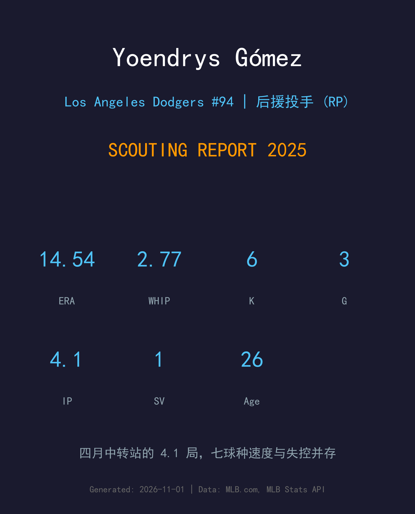
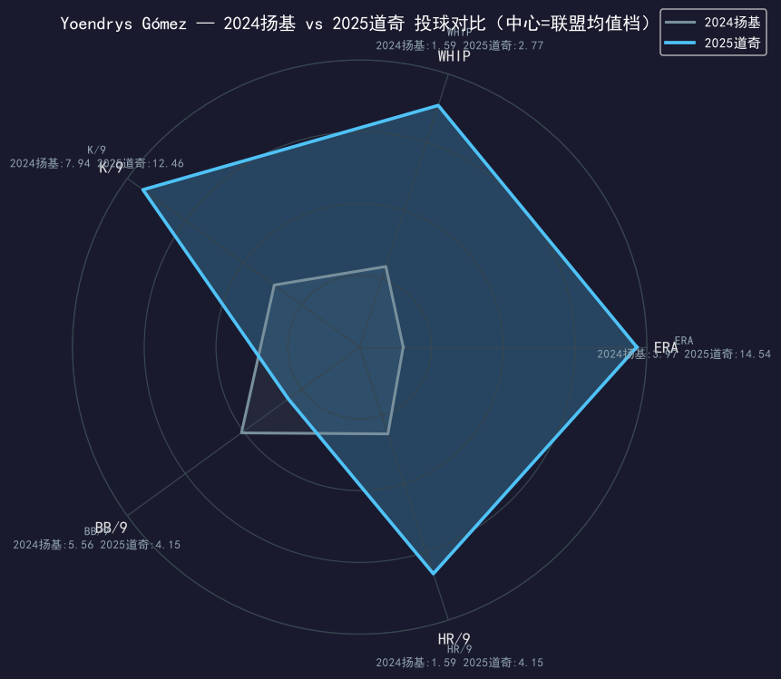
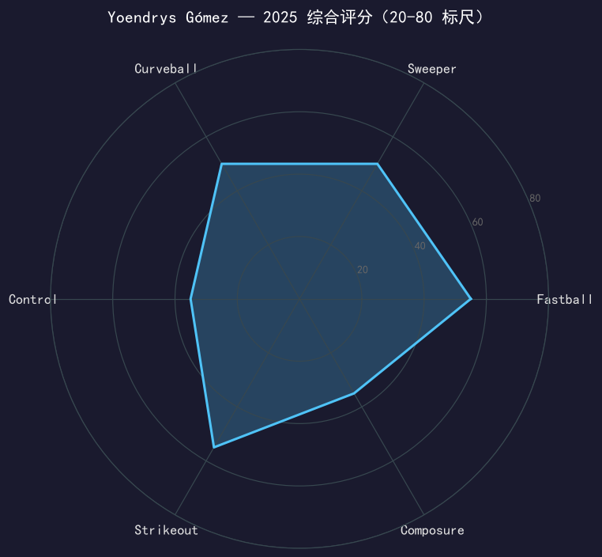

Los Angeles Dodgers #94 | 后援投手 | 右投 | 四月中转站的 4.1 局，七球种速度与失控并存

Yoendrys Gómez 在道奇的停留时间短得需要用小时计：4 月 25 日从扬基 waiver 线上被认领，5 月 6 日被指定让渡，5 月 10 日再被白袜认领——15 天，3 场出赛、4.1 局、自责分率 14.54、1 次救援成功。他是 2025 年道奇牛棚名单上最短暂的过客之一。
但这 4.1 局里有一颗值得记录的投手：6 次三振（K/9 12.46）、七球种武器库（速球、伸卡、横扫滑、曲球、变速、卡特、滑球）、26 岁的身体——速度全面在线，控制全面缺席（10 支安打、2 支全垒打挤进 4.1 局）。这是典型的「高 stuff 未开发」样本：白袜认领他后立刻让他先发 9 场，正是看中了同一样东西。
从 2025 年 11 月的视角看，Gómez 的 2025 年反而可以算作成功：从扬基的 waiver 线到白袜的先发轮值，他用四个月完成了从「弃将」到「被认真对待的投手」的跨越。对一位 26 岁的委内瑞拉火球手来说，芝加哥的 48.1 局比洛杉矶的 4.1 局重要得多——但他仍然需要证明，自己的控球能追上自己的球速。
9 月 28 日在扬基登上大联盟，首秀 2 局零失分 4 三振——只用一场比赛就让纽约记住了这颗来自委内瑞拉的速球。
5 月 10 日被白袜认领后，他单季先发出赛 9 场、投 48.1 局、47 次三振——从 waiver 弃将到 MLB 先发，只用了三周。
以下为道奇段数据（2025-04-25 自扬基 waiver 认领、2025-05-06 被指定让渡）：

| 阶段 | 球队 | G | ERA | WHIP | IP | SO | BB |
|---|---|---|---|---|---|---|---|
| 2024 | NYY | 5 | 3.97 | 1.59 | 11.1 | 10 | 7 |
| 2025（扬基段） | NYY | 6 | 2.70 | 1.40 | 10.0 | 5 | 9 |
| 2025（道奇段） | LAD | 3 | 14.54 | 2.77 | 4.1 | 6 | 2 |
| 2025（白袜段） | CWS | 12 | 4.84 | 1.26 | 48.1 | 47 | 16 |
4.1 局的道奇段是全年曲线的谷底而非趋势：前后两段（扬基 2.70、白袜 4.84）说明他的真实水平在两者之间。道奇段的爆炸由 2 支全垒打和 10 支安打构成——样本小到任何一次坏运气都能写成灾难。真正值得注意的趋势是他的角色跃迁：扬基时期他是纯后援，白袜直接让他先发 9 场——7 球种库+速球底子，球队看到的想象力和即战力一样多。
2025 赛季真实配球数据（MLB Stats API pitchArsenal，全季三队汇总）：
使用率第一的速球底子，进垒角度佳；先发出赛时承担吃局数任务。
沉球版本，诱导滚地球，与四缝线形成同速差的二元速球。
主要三振武器，横移幅度可观。
垂直变化球，改变打者视线的第四选项。
对付左打的变速，速差 4.5 mph 略小，仍在打磨。
零星使用的过渡与追杀球种——七球种结构的尾部。
Gómez 的 2025 年 5 月可以被写成一部「waiver 线生态」纪录片：4 月 25 日被道奇认领，5 月 6 日被 DFA，5 月 10 日被白袜认领——12 天内两次改变球队。这种频率对多数球员是羞辱，对他却是曝光：白袜认领后立刻给他 9 场先发，这是任何球探报告都换不来的展示机会。他用 48.1 局 47 三振回应了这份信任。
七球种对先发投手是奢侈，对控球不稳的 26 岁投手可能是噪音。Gómez 的 BB/9 全年在 4-8 之间波动，说明他的问题与 Noah Davis 类似：球种太多，每一颗的进垒精度都不够。先发化的 2025 下半场给了答案的一半——他的 WHIP 降到 1.26；但 9 轰也说明，把球放进好球带的代价是被打者更从容地选择攻击球种。
从 11 月的视角看，Gómez 手中有的是时间（26 岁）、球速（93.8）和想象力（七球种），缺的是一处能让他连续投 100 局的稳定环境。白袜的重建牛棚恰好是这种环境——如果 2026 年他能把 BB/9 压到 3.5 以下，这份 14.54 的道奇段数据将只是一段趣闻；如果不能， waiver 线还会再次见到他。

七球种毛坯，速度已到货、精度在路上
C+ 级 / 开发中的双栖投手
道奇 2025 季后赛夺冠之路：外卡 2-0 红人 → NLDS 3-1 费城人 → NLCS 4-0 酿酒人 → 世界大赛 4-3 多伦多蓝鸟。
Gómez 与这条夺冠路无关——5 月 6 日他已被 DFA，5 月 10 日穿上白袜球衣。他的 2025 年下半场在芝加哥南部度过，与十月的洛杉矶相隔 2000 英里和一整条 waiver 线。
Gómez 的 2026 年从白袜的先发/长中继竞争开始：他需要把 48.1 局的先发答卷变成 100+ 局的稳定产出，并把 BB/9 钉在 4 以下。做到了，他会从「waiver 线常客」变成「球队计划的一部分」——这在重建期的芝加哥并非奢望。
理想剧本：锁定白袜轮值末段，投出 120 局
现实基准：先发与长中继之间的摇摆臂
上行惊喜：控球跃升后进入年轻轮值核心的讨论
Yoendrys Gómez 来自委内瑞拉的尼尔瓜，在扬基的国际球员体系中成长，2019 年签下职业合约后在农场里一步步爬升。2023 年 9 月 28 日，他在纽约完成大联盟首秀——2 局零失分 4 三振，一个堪称完美的开场。
但扬基的牛棚竞争是 MLB 最残酷的，2024-25 两个赛季他只为纽约投了 21 局。2025 年 4 月 25 日，他被道奇认领——15 天后被 DFA，再 4 天后被白袜认领。对多数人来说这是漂泊的耻辱；对 Gómez 来说，这是他在芝加哥获得 9 场先发机会的入场券。
2025 年 11 月的 Yoendrys Gómez 用全年 62.2 局、三队球衣和 58 次三振写下了一部「waiver 线生存指南」。他的下一站是白袜的春训——而这一次，他希望是最后一次搬家。